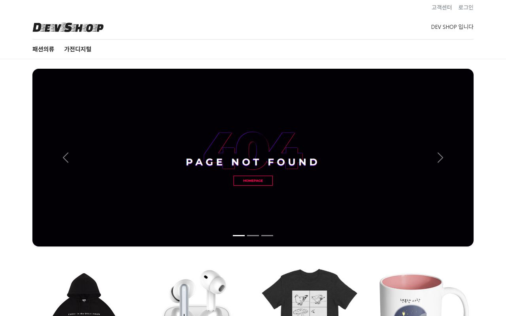
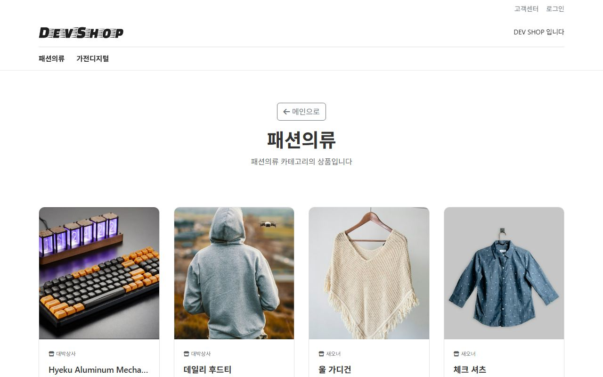
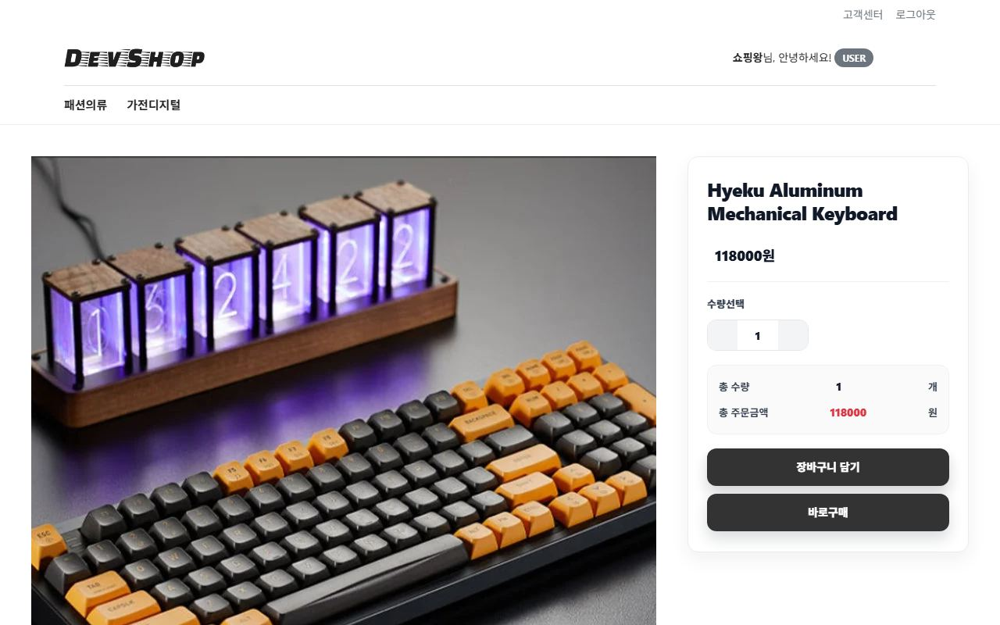
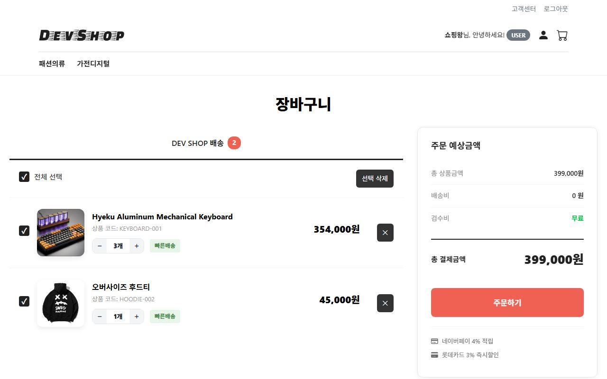
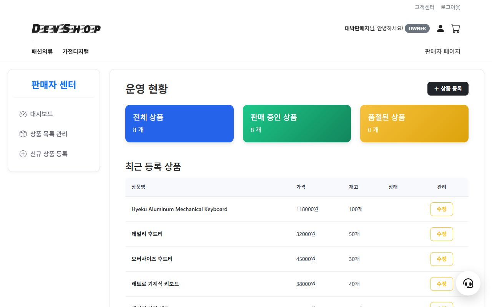
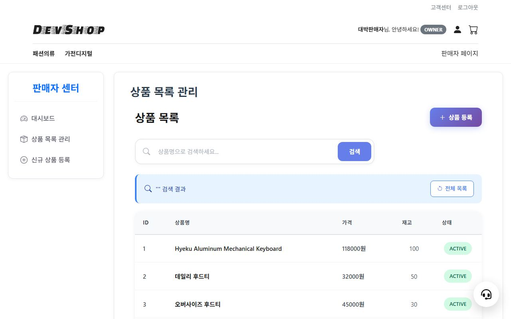
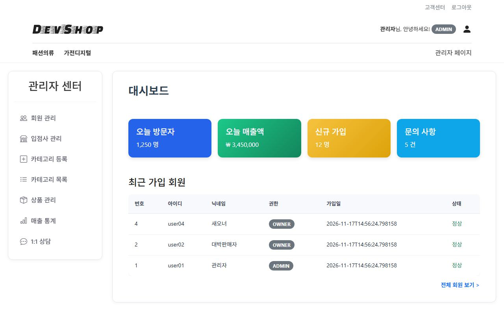
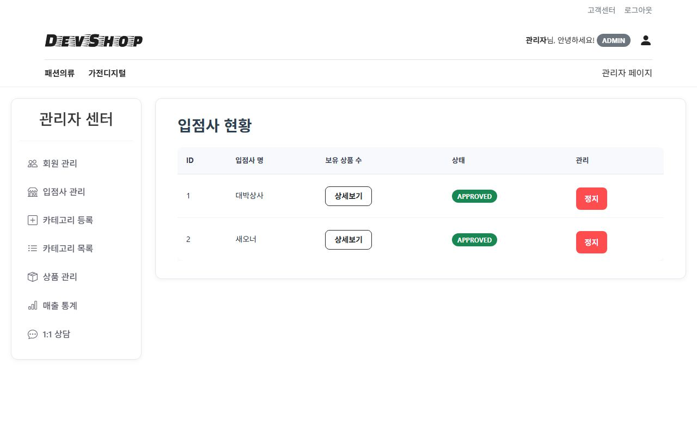
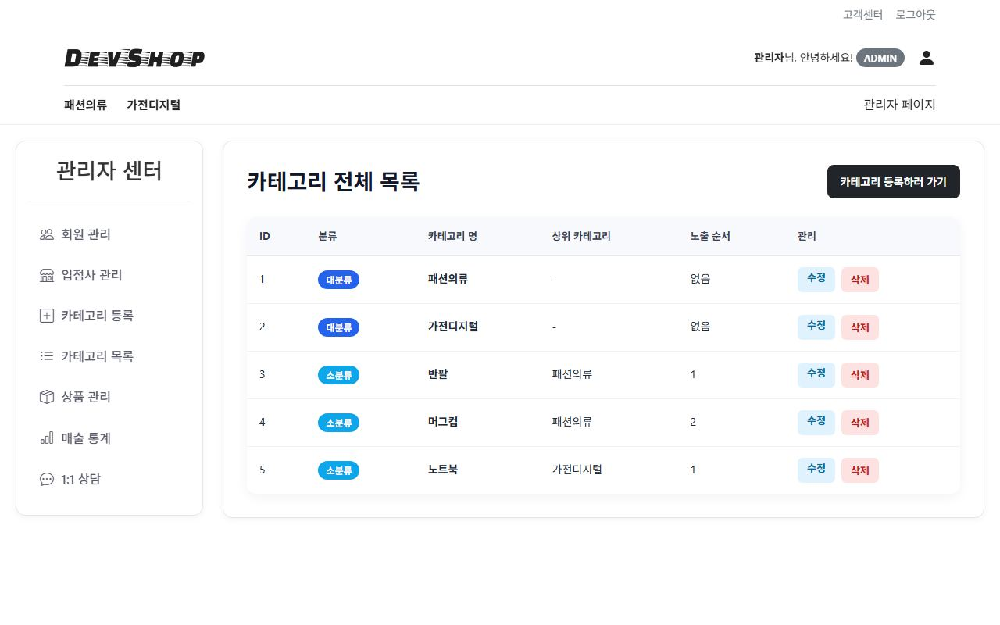

Windows에서 한글 시드 데이터가 전부 깨짐
원인 data.sql을 OS 기본 인코딩(MS949)으로 읽음. 기본 인코딩이 UTF-8인 환경에서는 드러나지 않던 문제.
해결 spring.sql.init.encoding: UTF-8을 명시해 OS와 무관하게 동작.
키보드·마우스·모니터 같은 개발자 용품을 사고파는 쇼핑몰. 사용자 · 판매자 · 관리자 세 역할이 상품 등록부터 주문 · 결제 · 리뷰 · 1:1 상담까지 하나의 서비스 안에서 움직입니다.
팀 프로젝트 종료 후 로컬(H2)에서 직접 실행해 역할별 계정으로 캡처한 화면입니다. 이미지를 누르면 크게 볼 수 있습니다.









git log 기준. 커밋 수는 작업량의 대략적인 지표일 뿐이며, 결제(Toss) · 채팅(WebSocket) · 관리자 통계는 다른 팀원이 주도했습니다.
Spring Security 없이 세션 + 인터셉터 체인으로 USER / OWNER / ADMIN을 분리했습니다. 로그인 → 판매자 → 관리자 인터셉터가 경로 패턴별로 걸리고, 권한이 없으면 안내 후 되돌립니다. 비밀번호는 BCrypt로 해시합니다.
PaymentGateway 인터페이스 뒤에 Toss 결제와 Mock 결제를 두고 PaymentGatewayResolver가 선택합니다. 결제 수단을 추가해도 주문 로직은 바뀌지 않도록 한 구조로, 결제 승인 · 환불 · 재고 차감을 한 트랜잭션에서 처리합니다.
개인 fork에서 Windows 로컬 실행 → 역할별 38개 화면 자동 점검 → 헤드리스 브라우저 확인 순으로 다시 검증하며 고친 내용입니다.
원인 data.sql을 OS 기본 인코딩(MS949)으로 읽음. 기본 인코딩이 UTF-8인 환경에서는 드러나지 않던 문제.
해결 spring.sql.init.encoding: UTF-8을 명시해 OS와 무관하게 동작.
원인 findByOwnerId가 Optional<Product>로 선언돼 상품 2개 이상인 판매자에서 예외. Optional.stream() 덕에 컴파일은 통과해 숨어 있던 버그.
해결 반환 타입을 List<Product>로 변경.
원인 응답 DTO가 UserRole 엔티티를 그대로 노출 → UserRole ↔ User 양방향 참조로 직렬화 깊이 1000 초과.
해결 DTO에는 역할 이름 문자열만 담도록 수정 — 엔티티를 API 응답에 직접 쓰지 않는다는 원칙 재확인.
HTML 소스의 alert( 문자열만 보고 오류로 판단했다가, 실제로는 버튼 핸들러 안의 문구였던 오탐이 있었습니다. 헤드리스 브라우저로 실제 발생한 dialog만 수집하도록 점검 도구를 바꿔 해결했습니다.
미구현으로 남은 부분(아이디 찾기, 결제 콜백 주소 하드코딩 등)은 fork의 MAINTENANCE.md에 정리했습니다.